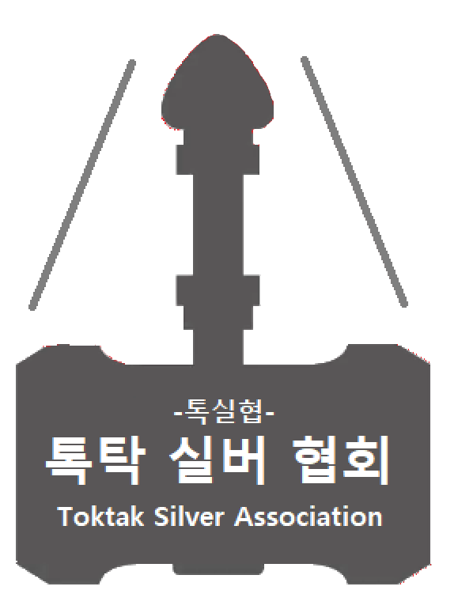
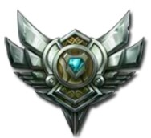
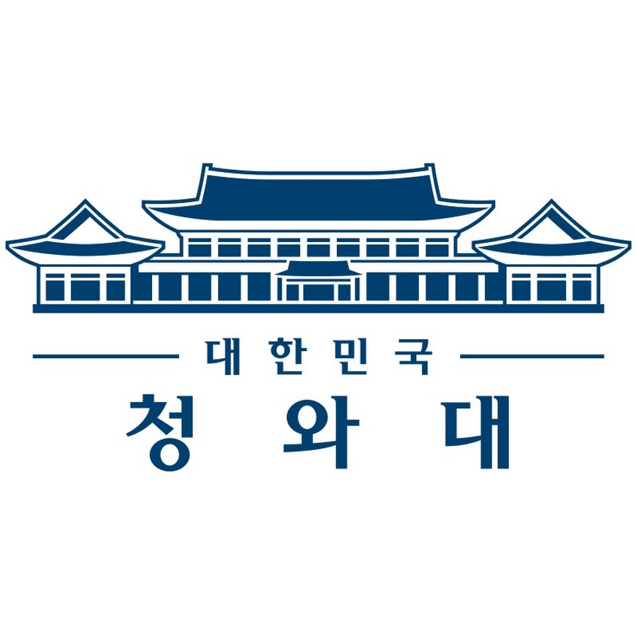
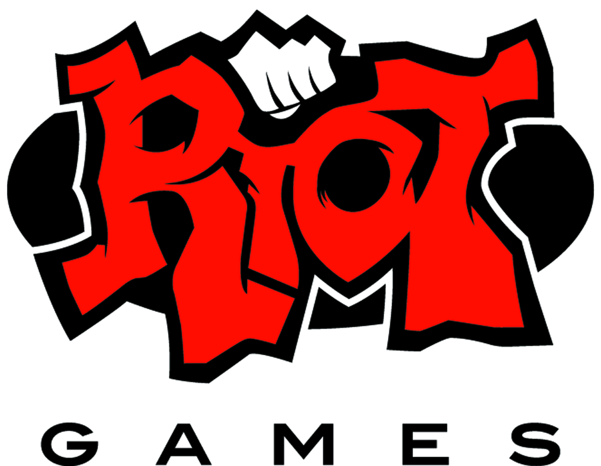
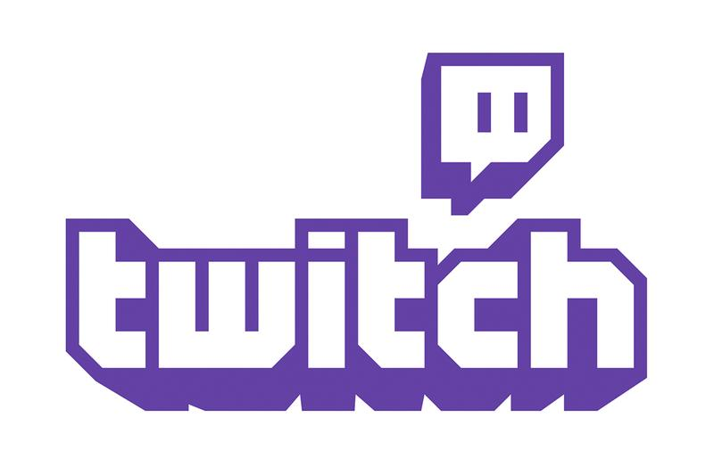
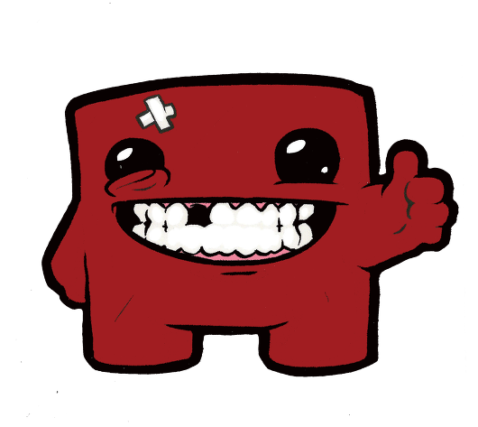

톡탁 실버 협회에 오신 것을 환영합니다
소개

안녕하세요. 톡탁의 티어를 톡탁의 대머리처럼 빛나는 티어인 실버로, 톡탁 실버 협회(Toktak Silver Assoiciation)입니다. 저희 톡탁 실버 협회(이하 톡실협)는 기원전 888년, 치킨을 뜯다가 톡탁의 대머리가 생각나 비밀 결사대로 창설되었습니다.

톡실협의 목표는 톡탁의 티어를 골드도, 브론즈도 아닌 "실버"에 평생 머무르게 하는데에 있습니다. 톡실협은 톡탁의 티어를 실버로 하기 위해 언제나 열심히, 매일매일 일하고 있습니다. 톡실협의 직원들은 모두 톡탁의 티어를 실버로 만들겠다는 의지 하나만으로 열심히 업무에 임하고 있으며, 톡실협은 이러한 사원들과 여러 스폰서들의 지원과 함께 미래를 향해 나아가고 있습니다.
활동
톡실협은 톡탁이 롤을 키든 말든 열심히 활동하고 있습니다. 아래는 활동 사례입니다.
톡실협 협회 사원분들이 힘내주신 사례입니다. 톡탁의 실력과 멘탈을 둘 다 망쳐버린 좋은 사례이죠. 이 판에 기여한 사원들은 모두 포상휴가를 받았습니다.
이 사례는 톡실협 분들이 발상의 전환을 통해 내부분열을 일으킨 사례입니다.
사실 이번 사례는 톡탁의 잘못이 아닙니다. 저희 톡실협이 톡탁의 집주소를 알아내 집 앞에서 방해전파를 발사했고, 그 결과 저런 똥컨트롤이 나온 사례입니다.
사실 저희 톡실협의 사원은 아군에만 있는게 아닙니다. 톡실협 사원들은 플래그를 세우는 소리를 들으면 각성하는데, 톡탁이 플래그를 세우자마자 바로 순삭해버린 사례입니다.
톡실협은 어디에나 있으며, 어디에도 있지 않습니다. 톡탁의 MMR을 낮추기 위해 노력하고, 전국에서 낫닝겐을 찾아 영입하며, 해킹을 통해 컴퓨터를 먹통으로 만들고, 일부러 톡탁의 컨디션을 나쁘게 만드는데다가 가끔씩은 건담 파츠를 훔쳐 좌절감을 느끼게 합니다. 톡실협의 활동은 톡탁의 끝까지 계속될 것입니다.
계획
1. 톡탁을 골드에서 실버로
2. 뽀삐 E의 스턴을 둔화로 바꾸기
3. 초딩을 영입, 정치질에 특화시켜 실전 투입
4. 뉴메타병X를 대거 유입해 톡탁 멘탈 기체화
5. 대머리로 인해 전파가 톡탁 집으로 잘 안 퍼지는 것을 보완
6. 봇 듀오에 커플을 넣는데에 집중하기
7. 솔랭 탑 라인을 뺏기
8. 픽창에서 미치도록 싸우게 하기
현재까지의 계획은 이렇게 있습니다.
원리
그렇다면 톡실협이 이렇게 활동을 할 수 있는 이유는 무엇일까요? 그것은 스폰서들 덕분입니다.

톡실협의 첫 스폰서는 청와대였습니다. 때는 1년 전, 톡탁의 대머리가 태양빛을 반사해 절묘하게 청와대 기밀문서를 비춰 기밀문서를 태우게 됩니다. 청와대에서는 이를 톡탁이 기밀문서의 내용을 알고 일부러 태운 것이라고 생각해 두번째 스폰서, 국정원 아래에 비밀리에 "톡탁조사부"를 창설, 톡탁을 감시하기 시작합니다.
톡탁조사부는 톡탁의 멘탈을 깨트려 톡탁이 기밀문서 내용을 아는지 알아내려고 하지만, 톡탁의 멘탈은 톡탁의 머리 만큼이나 딱딱했고, 톡탁조사부는 아무런 성과도 내지 못한 채 없어질 위험에 처하게 됩니다. 그 때, 톡탁이 롤을 하면서 멘탈을 깨지는 모습을 보고 세번째 스폰서, 라이엇 게임즈에게 연락을 합니다.

라이엇 게임즈는 마침 심심하였기에 톡탁조사부의 요구를 흔쾌히 허락, 둘의 힘을 합쳐 지금의 톡탁 실버 협회를 창설합니다. 그와 동시에 톡탁조사부는 톡탁이 스트리머라는 것을 알아내고 네번째 스폰서, 트위치에게 연락하여 도움을 청합니다.

트위치는 톡탁이 졸잼인 것에 왜 재밌는지 의문을 갖고 있었기에 톡탁에 대한 연구를 위하여 톡탁조사부에 협력합니다. 그리고 트위치는 톡탁 실버 협회에 "트수"라는 톡탁 멘탈 브레이킹 전문 군인들을 육성, 톡탁 방송에 투입합니다.

트수들은 전문적으로 톡탁 멘탈을 쥐어잡고, 톡실협 게이머 사원들은 아군 또는 적군으로서 톡탁을 실버에 가두기 위해 노력합니다. 앞으로 톡실협의 이러한 노력은 계속될 것입니다.
인재 채용
저희 톡실협은 다음과 같은 사람을 인재로서 채용하고 있습니다.
*저희 톡실협은 블라인드 채용을 합니다.
1. 무개념 초딩
2. 할 거 없는 트수
3. 롤 못하는 사람
4. 롤 잘하는 사람
5. 입 잘터는 사람
6. 모발이 있는 사람
7. 롤 시작하기 전에 담배 피는 사람
8. 뉴메타에 관심이 많은 사람
9. 훈수 잘 두는 사람
10. 친구는 1도 없지만 자신이 인싸인것 같은 사람
근무환경 -
주 4회 출근, 연봉 1500만원 이상, 야근 없음, 10시 출근, 4시 퇴근, 야근 없음, 4대 보험 적용, 근무용 데스크탑과 노트북 제공, 자격증 취득 및 교육 지원